⚡ 电力公司
Power Grid · 设计：Friedemann Friese · 2–6 人（中文版规则书全文转录，附中国/韩国地图扩展规则）
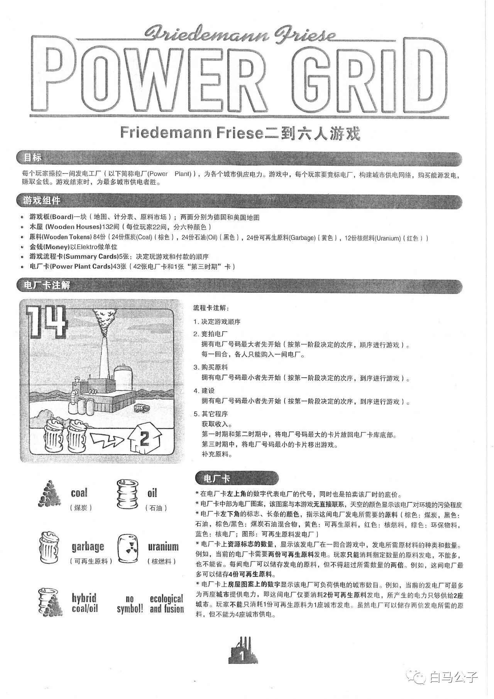
本页整理自微信公众号「白马公子」《电力公司》游戏规则发布的《电力公司》(Power Grid) 中文规则书扫描件（Friedemann Friese 设计，基础规则书 8 页），并一并收录其所附《中国/韩国 地图扩展》的封面与规则单页（Rio Grande Games，2008，含韩国/中国两张资源补充表）。逐页全文转录，原书扫描图随文嵌入——点击任意图片即可放大查看。规则内容归 2F-Spiele、Rio Grande Games 及版权方所有，转录仅供个人学习查阅。
整理说明：扫描件为灰度印刷品，书中未载中文翻译者与发行信息。原书排印问题较多，均照录并加〔原文如此〕：「到序」（应为倒序，P.1 流程卡注解）、「Aress」（应为 Areas，P.2）、「10 Elektron」（应为 Elektro，P.5 举例）、「颠序」「原料兜」（P.5）、「校燃料」「3分煤炭」（P.6）、「从新排序」（P.3/P.4/P.8）、「竟拍电厂」（P.7）、「也有可能有走到第二时期就结束」等病句，以及 P.4「重要：本阶段采取倒序」整框重复印刷、P.7 句号后孤立逗号等，均为原书排印如此。P.5 报酬表（0–20 城 × 收入）、P.8 补充资源表（2–6 人 × Step 1/2/3）与 P.12 韩国表（N/S 双行 × 45 格）、中国表（60 格）均已逐格人工核对。扩展单页为条栏排版，转录按左中右栏顺序。〔图 …〕说明为整理所拟；扫描件右下角「白马公子」水印非原书内容。
（手写体英文）Friedemann Friese
Friedemann Friese二到六人游戏
目标
每个玩家操控一间发电工厂（以下简称电厂（Power Plant）），为各个城市供应电力。游戏中，每个玩家要竞标电厂，构建城市供电网络，购买能源发电，赚取金钱。游戏结束时，为最多城市供电者胜。
游戏组件
- 游戏板（Board）一块（地图、计分表、原料市场）；两面分别为德国和美国地图
- 木屋（Wooden Houses)132间（每位玩家22间，分六种颜色）
- 原料（Wooden Tokens) 84份（24份煤炭（Coal）（棕色），24份石油（Oil）（黑色），24份可再生原料（Garbage）（黄色），12份核燃料（Uranium）（红色））
- 金钱（Money）以Elektro做单位
- 游戏流程卡（Summary Cards)5张：决定玩游戏和付款的顺序
- 电厂卡（Power Plant Cards)43张（42张电厂卡和1张"第三时期"卡）
电厂卡注解
〔图 一张14号电厂卡示例，左上角大数字14，画面为带烟囱的厂房，左下角有原料标志与闪电箭头，房屋图案上标数字2〕
流程卡注解：
1. 决定游戏顺序
2. 竞拍电厂
拥有电厂号码最大者先开始（按第一阶段决定的次序，顺序进行游戏）。
每一回合，各人只能购入一间电厂。
3. 购买原料
拥有电厂号码最小者先开始（按第一阶段决定的次序，到序进行游戏）。〔原文如此："到序"〕
4. 建设
拥有电厂号码最小者先开始（按第一阶段决定的次序，到序进行游戏）。
5. 其它程序
获取收入。
第一时期和第二时期中，将电厂号码最大的卡片放回电厂卡库底部。
第三时期中，将电厂号码最小的卡片移出游戏。
补充原料。
（原料符号图例，两列排布）
- coal（煤炭）
- oil（石油）
- garbage（可再生原料）
- uranium（核燃料）
- hybrid coal/oil
- no symbol! ecological and fusion
电厂卡
* 在电厂卡左上角的数字代表电厂的代号，同时也是拍卖该厂时的底价。
* 电厂卡中部为电厂图案，该图案与本游戏无直接联系，天空的颜色显示该电厂对环境的污染程度〔原文如此：句末无标点〕
* 电厂卡左下角的标志、长条的颜色，指示这间电厂发电所需要的原料（棕色：煤炭，黑色：石油，棕色/黑色：煤炭石油混合物，黄色：可再生原料，红色：核燃料，绿色：环保物料，蓝色：核电厂；图形：可再生原料发电厂）
* 电厂卡上资源标志的数量，显示该发电厂在一回合游戏中，发电所需原材料的种类和数量。例如，当前的电厂卡需要两份可再生原料发电。玩家只能消耗指定数量的原料发电，不能多，也不能省。每间电厂可以储存发电的原料，但不得超过所需数量的两倍。例如，这间电厂最多可以储存4份可再生原料。
* 电厂卡上房屋图案上的数字显示该电厂可负荷供电的城市数目。例如，当前的发电厂可最多为两座城市提供电力，即这间电厂仅要消耗2份可再生原料发电，所产生的电力只够供给2座城市。玩家不能只消耗1份可再生原料为1座城市发电。虽然电厂可以储存两倍发电所需的原料，但不能为4座城市供电。
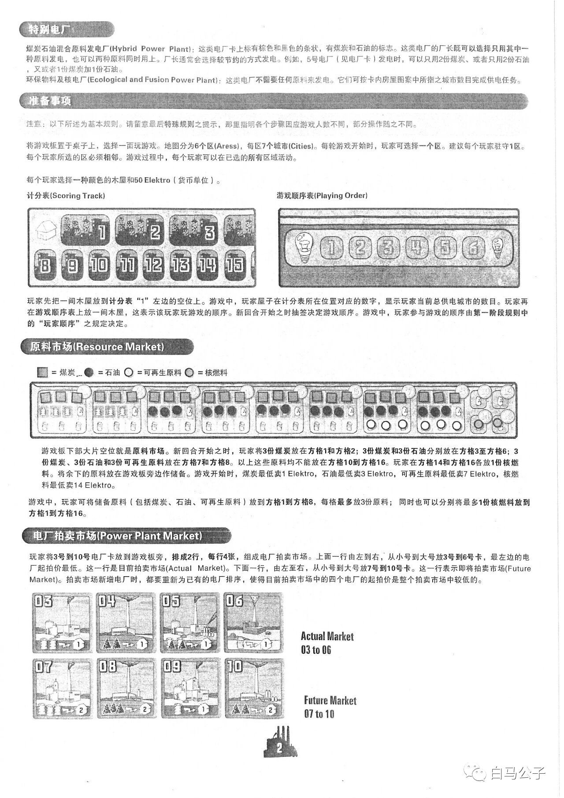
特别电厂
煤炭石油混合原料发电厂（Hybrid Power Plant）：这类电厂卡上标有棕色和黑色的条状，有煤炭和石油的标志。这类电厂的厂长既可以选择只用其中一种原料发电，也可以两种原料同时用上。厂长通常会选择较节约的方式发电。例如，5号电厂（见电厂卡）发电时，可以只用2份煤炭、或者只用2份石油，又或者1份煤炭加1份石油。
环保物料及核电厂（Ecological and Fusion Power Plant）：这类电厂不需要任何原料来发电。它们可按卡内房屋图案中所指之城市数目完成供电任务。
准备事项
注意：以下所述为基本规则。请留意最后特殊规则之提示，那里指明各个步骤因应游戏人数不同，部分操作随之不同。
将游戏板置于桌子上，选择一面玩游戏。地图分为6个区（Aress），每区7个城市（Cities）。每轮游戏开始时，玩家可选择一个区。建议每个玩家驻守1区。每个玩家所选的区必须相邻。游戏过程中，每个玩家可以在已选的所有区域活动。
每个玩家选择一种颜色的木屋和50 Elektro（货币单位）。
计分表（Scoring Track)
〔图 计分表条带，左端有小屋图案，可见数字1、2、3与8至15〕
游戏顺序表（Playing Order)
〔图 游戏顺序表条带，两端各有一个灯泡图案，中间为数字1至6〕
玩家先把一间木屋放到计分表"1"左边的空位上。游戏中，玩家屋子在计分表所在位置对应的数字，显示玩家当前总供电城市的数目。玩家再在游戏顺序表上放一间木屋，这表示该玩家玩游戏的顺序。新回合开始之时抽签决定游戏顺序。游戏中，玩家参与游戏的顺序由第一阶段规则中的"玩家顺序"之规定决定。
原料市场（Resource Market)
〔图例〕■ = 煤炭 ● = 石油 ○ = 可再生原料 ◉ = 核燃料
〔图 原料市场板图条带，多个方格内画有煤炭、石油、可再生原料、核燃料符号，右上角可见格号15、16〕
游戏板下部大片空位就是原料市场。新回合开始之时，玩家将3份煤炭放在方格1和方格2；3份煤炭和3份石油分别放在方格3至方格6；3份煤炭、3份石油和3份可再生原料放在方格7和方格8。以上这些原料均不能放在方格10到方格16。玩家在方格14和方格16各放1份核燃料。将余下的原料放在游戏板旁边作储备。游戏开始时，煤炭最低卖1 Elektro，石油最低卖3 Elektro，可再生原料最低卖7 Elektro，核燃料最低卖14 Elektro。
游戏中，玩家可将储备原料（包括煤炭、石油、可再生原料）放到方格1到方格8，每格最多放3份原料；同时也可以分别将最多1份核燃料放到方格1到方格16。
电厂拍卖市场（Power Plant Market)
玩家将3号到10号电厂卡放到游戏板旁，排成2行，每行4张，组成电厂拍卖市场。上面一行由左到右，从小号到大号放3号到6号卡，最左边的电厂起拍价最低。这一行是目前拍卖市场（Actual Market）。下面一行，由左至右，从小号到大号放7号到10号卡。这一行表示即将拍卖市场（Future Market）。拍卖市场新增电厂时，都要重新为已有的电厂排序，使得目前拍卖市场中的四个电厂的起拍价是整个拍卖市场中较低的。
〔图 八张电厂卡排成两行，上排卡号为03、04、05、06，下排卡号为07、08、09、10；右侧印有 Actual Market 03 to 06 与 Future Market 07 to 10〕
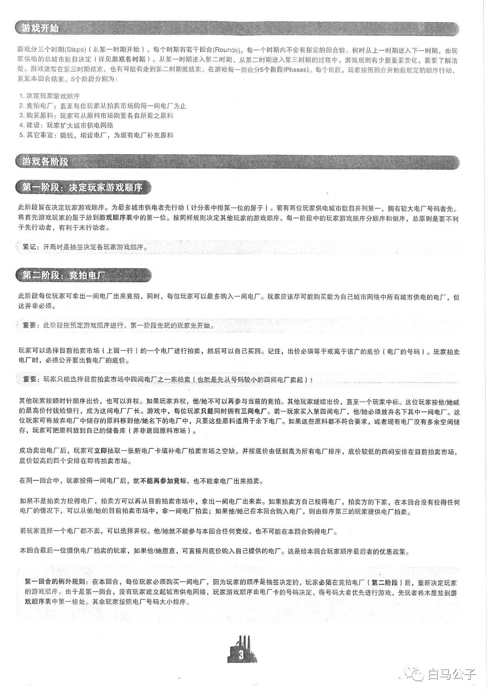
游戏开始
游戏分三个时期（Steps）（从第一时期开始），每个时期有若干回合（Rounds）。每一个时期内不会有指定的回合数。何时从上一时期进入下一时期，由玩家供电的总城市数目决定（详见游戏各时期）。从第一时期进入第二时期、从第二时期进入第三时期的过程中，游戏规则有少量重要变化，需要了解清楚。游戏通常在第三时期结束，也有可能有走到第二时期就结束〔原文如此〕。在游戏每一回合分5个阶段（Phases）。每个阶段，玩家按照回合开始前规定的顺序行动，直至本回合结束。5个阶段分别为：
1. 决定玩家游戏顺序
2. 竞拍电厂：直至每位玩家从拍卖市场购得一间电厂为止
3. 购买原料：玩家可从原料市场购置各自所需之原料
4. 建设：玩家扩大城市供电网络
5. 其它事宜：赚钱，增设电厂，为现有电厂补充原料
游戏各阶段
第一阶段：决定玩家游戏顺序
此阶段旨在决定玩家游戏顺序。为最多城市供电者先行动（计分表中排第一位的屋子）。若有两位玩家供电城市数目并列第一，拥有较大电厂号码者先。将首先游戏玩家的屋子放到游戏顺序表中的第一位。按同样规则决定其他玩家的游戏顺序。每一阶段中的玩家游戏顺序分顺序和倒序，总原则是要不利于先行动者，有利于末行动者。
紧记：开局时是抽签决定各玩家游戏顺序。
第二阶段：竞拍电厂
此阶段每位玩家可拿出一间电厂出来竞拍，同时，每位玩家可以最多购入一间电厂。玩家应该尽可能购买能为自己城市网络中所有城市供电的电厂，但这并非必须。
重要：此阶段按预定游戏顺序进行。第一阶段先玩的玩家先开始。
玩家可以选择目前拍卖市场（上面一行）的一个电厂进行拍卖，然后可以自己买回。记住，出价必须等于或高于该厂的底价（电厂的号码）。玩家拍卖电厂时，必须公开要出售电厂的底价。
重要：玩家只能选择目前拍卖市场中四间电厂之一来拍卖（也就是先从号码较小的四间电厂卖起）！
其他玩家按顺时针顺序出价，也可以弃权。如果玩家弃权，他/她不可以再参与当前的竞拍。其他玩家继续出价，直至一个玩家中标。这位玩家按他/她喊的最高价付钱给银行，成为这间电厂厂长。游戏中，每位玩家只能同时拥有三间电厂。若一玩家买入第四间电厂，他/她必须放弃名下其中一间电厂。这位玩家可将放弃电厂中储存的原料移到他/她名下的电厂中，只要这些原料适用于余下电厂。如果这些原料都不符合要求，或者现有电厂没有多余空间储存，玩家可把原料放到自己的储备库（并非退回原料市场）。
成功卖出电厂后，玩家可立即抽取一张新电厂卡填补电厂拍卖市场之空缺，并按底价由低到高为所有电厂排序，底价较低的四间安排在目前拍卖市场，底价较高的四个安排在即将拍卖市场。
在同一回合中，玩家投得一间电厂后，就不能再参加竞标，也不能拿电厂出来拍卖。
如果不是拍卖方投得电厂，拍卖方可以再从目前拍卖市场中，拿出一间电厂出来卖。如果拍卖方自己投得电厂，拍卖方的下家，在本回合没有投得任何电厂的情况下，可以从他/她的目前拍卖市场中，拿一间电厂拍卖；如果他/她已在本回合购入电厂，则由排序第三的玩家提供电厂拍卖。
若玩家选择一个电厂都不卖，可以选择弃权。他/她就不能参与本回合任何竞投，也不可能导致在本回合购得电厂〔原文如此〕。
本回合最后一位提供电厂拍卖的玩家，如果他/她愿意，可直接用底价购入自己提供的电厂。这是给本回合玩家顺序最后者的优惠政策。
第一回合的例外规则：在本回合，每位玩家必须购买一间电厂，因为玩家的顺序是抽签决定的，玩家必须在竞拍电厂（第二阶段）后，重新决定玩家的游戏顺序。由于是第一回合，没有玩家建立起城市供电网络，玩家游戏顺序由电厂卡的号码决定，得号码大者优先进行游戏，先玩者将木屋放到游戏顺序表中第一格处。其余玩家按照电厂号码大小排序。
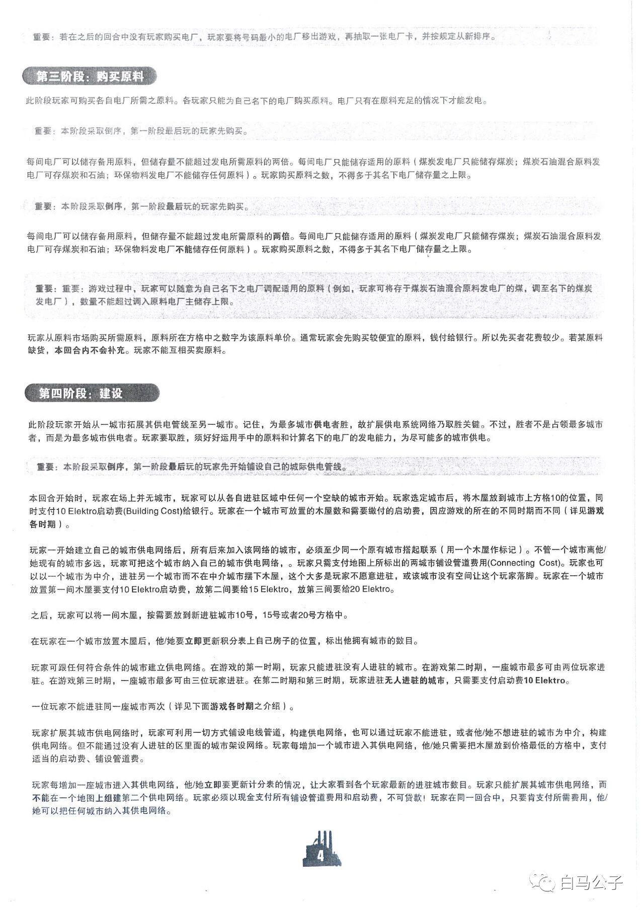
重要：若在之后的回合中没有玩家购买电厂，玩家要将号码最小的电厂移出游戏，再抽取一张电厂卡，并按规定从新排序〔原文如此〕。
第三阶段：购买原料
此阶段玩家可购买各自电厂所需之原料。各玩家只能为自己名下的电厂购买原料。电厂只有在原料充足的情况下才能发电。
重要：本阶段采取倒序，第一阶段最后玩的玩家先购买。
每间电厂可以储存备用原料，但储存量不能超过发电所需原料的两倍。每间电厂只能储存适用的原料（煤炭发电厂只能储存煤炭；煤炭石油混合原料发电厂可存煤炭和石油；环保物料发电厂不能储存任何原料）。玩家购买原料之数，不得多于其名下电厂储存量之上限。
重要：本阶段采取倒序，第一阶段最后玩的玩家先购买。
每间电厂可以储存备用原料，但储存量不能超过发电所需原料的两倍。每间电厂只能储存适用的原料（煤炭发电厂只能储存煤炭；煤炭石油混合原料发电厂可存煤炭和石油；环保物料发电厂不能储存任何原料）。玩家购买原料之数，不得多于其名下电厂储存量之上限。
〔原文如此：上自"重要：本阶段采取倒序"起的 重要 框与储存段落，与前面内容重复印刷〕
重要：重要：游戏过程中，玩家可以随意为自己名下之电厂调配适用的原料（例如，玩家可将存于煤炭石油混合原料发电厂的煤，调至名下的煤炭发电厂），数量不能超过调入原料电厂主储存上限〔原文如此〕。
玩家从原料市场购买所需原料，原料所在方格中之数字为该原料单价。通常玩家会先购买较便宜的原料，钱付给银行。所以先买者花费较少。若某原料缺货，本回合内不会补充。玩家不能互相买卖原料。
第四阶段：建设
此阶段玩家开始从一城市拓展其供电管线至另一城市。记住，为最多城市供电者胜，故扩展供电系统网络乃取胜关键。不过，胜者不是占领最多城市者，而是为最多城市供电者。玩家要取胜，须好好运用手中的原料和计算名下的电厂的发电能力，为尽可能多的城市供电。
重要：本阶段采取倒序，第一阶段最后玩的玩家先开始铺设自己的城际供电管线。
本回合开始时，玩家在场上并无城市，玩家可以从各自进驻区域中任何一个空缺的城市开始。玩家选定城市后，将木屋放到城市上方格10的位置，同时支付10 Elektro启动费（Building Cost）给银行。玩家在一个城市可放置的木屋数和需要缴付的启动费，因应游戏的所在的不同的时期而不同（详见游戏各时期）。
玩家一开始建立自己的城市供电网络后，所有后来加入该网络的城市，必须至少同一个原有城市搭起联系（用一个木屋作标记）。不管一个城市离他/她现有的城市多远，玩家可把这个城市纳入自己的城市供电网络，。〔原文如此〕玩家只需支付地图上所标出的两城市铺设管道费用（Connecting Cost）。玩家也可以以一个城市为中介，进驻另一个城市而不在中介城市摆下木屋，这个大多是玩家不愿意进驻，或该城市没有空间让这个玩家落脚。玩家在一个城市放置第一间木屋要支付10 Elektro启动费，放第二间要给15 Elektro，放第三间要给20 Elektro。
之后，玩家可以将一间木屋，按需要放到新进驻城市10号，15号或者20号方格中。
在玩家在一个城市放置木屋后，他/她要立即更新积分表上自己房子的位置，标出他拥有城市的数目。
玩家可跟任何符合条件的城市建立供电网络。在游戏的第一时期，玩家只能进驻没有人进驻的城市。在游戏第二时期，一座城市最多可由两位玩家进驻。在游戏第三时期，一座城市最多可由三位玩家进驻。在第二时期和第三时期，玩家进驻无人进驻的城市，只需要支付启动费10 Elektro。
一位玩家不能进驻同一座城市两次（详见下面游戏各时期之介绍）。
玩家扩展其城市供电网络时，玩家可利用一切方式铺设电线管道，构建供电网络，也可以通过玩家不能进驻，或者他/她不想进驻的城市为中介，构建供电网络。但不能通过没有人进驻的区里面的城市架设网络。玩家每增加一个城市进入其供电网络，他/她只需要把木屋放到价格最低的方格中，支付适当的启动费、铺设管道费。
玩家每增加一座城市进入其供电网络，他/她立即要更新计分表的情况，让大家看到各个玩家最新的进驻城市数目。玩家只能扩展其城市供电网络，而不能在一个地图上组建第二个供电网络。玩家必须以现金支付所有铺设管道费用和启动费，不可贷款！玩家在同一回合中，只要肯支付所需费用，他/她可以把任何城市纳入其供电网络。
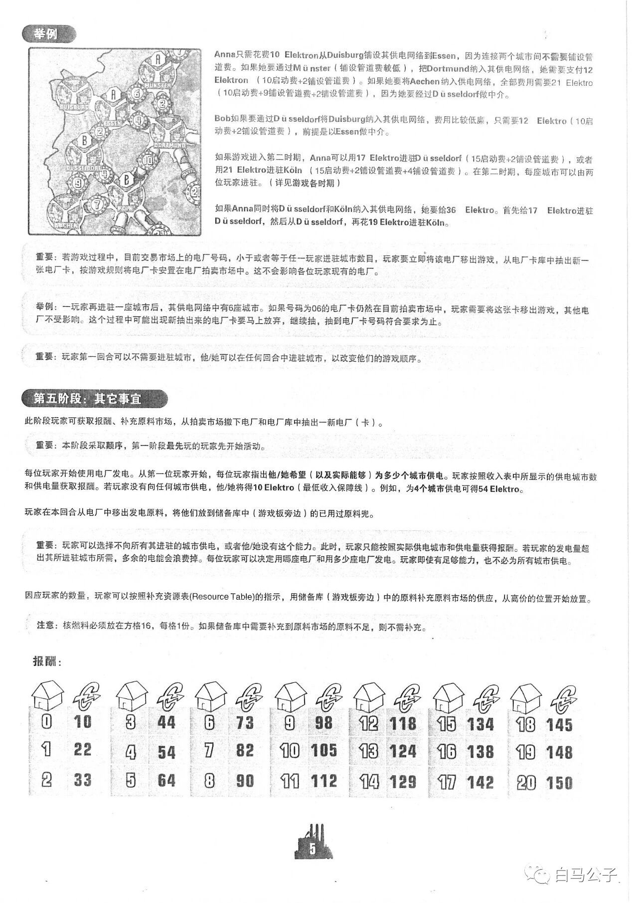
举例
〔图 德国西部局部地区图，标有 Duisburg、Münster、Essen、Dortmund、Düsseldorf、Köln、Aachen 等城市，城市间连线旁标有管道连接费用数字（6、2、4、2、3、10、9、7、20 等），图中有 A、B 字样的房屋标记〕
Anna只需花费10 Elektron〔原文如此，即 Elektro〕从Duisburg铺设其供电网络到Essen，因为连接两个城市间不需要铺设管道费。如果她要通过Münster（铺设管道费较低），把Dortmund纳入其供电网络，她需要支付12 Elektron〔原文如此〕（10启动费+2铺设管道费）。如果她要将Aachen纳入供电网络，全部费用需要21 Elektro（10启动费+9铺设管道费+2铺设管道费），因为她要经过Düsseldorf做中介。
Bob如果要通过Düsseldorf将Duisburg纳入其供电网络，费用比较低廉，只需要12 Elektro（10启动费+2铺设管道费），前提是以Essen做中介。
如果游戏进入第二时期，Anna可以用17 Elektro进驻Düsseldorf（15启动费+2铺设管道费），或者用21 Elektro进驻Köln（15启动费+2铺设管道费+4铺设管道费）。在第二时期，每座城市可以由两位玩家进驻。（详见游戏各时期）
如果Anna同时将Düsseldorf和Köln纳入其供电网络，她要给36 Elektro。首先给17 Elektro进驻Düsseldorf，然后从Düsseldorf，再花19 Elektro进驻Köln。
重要：若游戏过程中，目前交易市场上的电厂号码，小于或者等于任一玩家进驻城市数目，玩家要立即将该电厂移出游戏，从电厂卡库中抽出新一
张电厂卡，按游戏规则将电厂卡安置在电厂拍卖市场中。这不会影响各位玩家现有的电厂。
举例：一玩家再进驻一座城市后，其供电网络中有6座城市。如果号码为06的电厂卡仍然在目前拍卖市场中，玩家需要将这张卡移出游戏，其他电厂不受影响。这个过程中可能出现新抽出来的电厂卡要马上放弃，继续抽，抽到电厂卡号码符合要求为止。
重要：玩家第一回合可以不需要进驻城市，他/她可以在任何回合中进驻城市，以改变他们的游戏顺序。
第五阶段：其它事宜
此阶段玩家可获取报酬、补充原料市场，从拍卖市场撤下电厂和电厂库中抽出一新电厂（卡）。
重要：本阶段采取颠序〔原文如此〕，第一阶段最先玩的玩家先开始活动。
每位玩家开始使用电厂发电。从第一位玩家开始，每位玩家指出他/她希望（以及实际能够）为多少个城市供电。玩家按照收入表中所显示的供电城市数和供电量获取报酬。若玩家没有向任何城市供电，他/她将得10 Elektro（最低收入保障线）。例如，为4个城市供电可得54 Elektro。
玩家在本回合从电厂中移出发电原料，将他们放到储备库中（游戏板旁边）的已用过原料兜。〔原文如此，"原料兜"疑为"原料袋"之意〕
重要：玩家可以选择不向所有其进驻的城市供电，或者他/她没有这个能力。此时，玩家只能按照实际供电城市和供电量获得报酬。若玩家的发电量超出其所进驻城市所需，多余的电能会浪费掉。每位玩家可以决定用哪座电厂和用多少座电厂发电。玩家即使有足够能力，也不必为所有城市供电。
因应玩家的数量，玩家可以按照补充资源表（Resource Table）的指示，用储备库（游戏板旁边）中的原料补充原料市场的供应，从高价的位置开始放置。
注意：核燃料必须放在方格16，每格1份。如果储备库中需要补充到原料市场的原料不足，则不需补充。
报酬：
〔表：共 3 行、7 组，每组两列；每组左列数字上方印有小房屋图标，右列数字上方印有 Elektro 货币（带闪电箭头的圆形）图标〕
| 0 | 10 | 3 | 44 | 6 | 73 | 9 | 98 | 12 | 118 | 15 | 134 | 18 | 145 |
|---|---|---|---|---|---|---|---|---|---|---|---|---|---|
| 1 | 22 | 4 | 54 | 7 | 82 | 10 | 105 | 13 | 124 | 16 | 138 | 19 | 148 |
| 2 | 33 | 5 | 64 | 8 | 90 | 11 | 112 | 14 | 129 | 17 | 142 | 20 | 150 |
〔页脚：页码 5；右下角有扫描水印"白马公子"〕
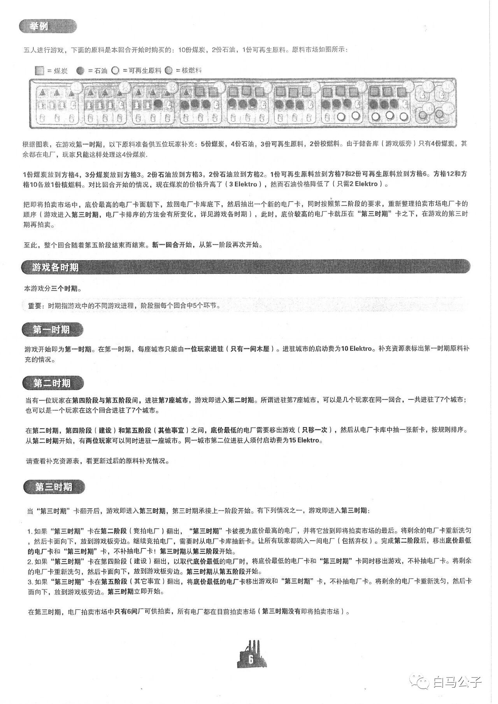
举例
五人进行游戏，下面的原料是本回合开始时购买的：10份煤炭，2份石油，1份可再生原料。原料市场如图所示：
〔图例一行：实心方块 = 煤炭，实心圆 = 石油，空心圆 = 可再生原料，灰色实心圆 = 核燃料〕
〔图 原料市场图板照片：一条横长的分格式市场条，每格上方有圆圈数字编号（可见 1 至 13），各格内绘有不同形状的原料符号并摆有对应数量的原料件〕
根据图表，在游戏第一时期，以下原料准备供五位玩家补充：5份煤炭，4份石油，3份可再生原料，2份校燃料〔原文如此，即"核燃料"〕。由于储备库（游戏板旁）只有4份煤炭，其余都在电厂，玩家只能这样处理这4份煤炭.
1份煤炭放到方格4，3分煤炭〔原文如此，"3分"疑为"3份"〕放到方格3。2份石油放到方格3，2份石油放到方格2。1份可再生原料放到方格7和2份可再生原料放到方格6。方格12和方格10各放1份核燃料。对比回合开始的情况，现在煤炭的价格升高了（3 Elektro），然而石油价格降低了（只需2 Elektro）。
把即将拍卖市场中，底价最高的电厂卡面朝下，放回电厂卡库底下，然后抽出一个新的电厂卡，同时按照第二阶段的要求，重新整理拍卖市场电厂卡的顺序（游戏进入第三时期，电厂卡排序的方法会有所变化，详见游戏各时期），此时，底价较高的电厂卡就压在"第三时期"卡之下，在游戏的第三时期再拍卖。
至此，整个回合随着第五阶段结束而结束。新一回合开始，从第一阶段再次开始。
游戏各时期
本游戏分三个时期。
重要：时期指游戏中的不同游戏进程，阶段指每个回合中5个环节。
第一时期
游戏开始即为第一时期。在第一时期，每座城市只能由一位玩家进驻（只有一间木屋）。进驻城市的启动费为10 Elektro。补充资源表标出第一时期原料补充的情况。
第二时期
当有一位玩家在第四阶段与第五阶段间，进驻第7座城市，游戏即进入第二时期。所谓进驻第7座城市，可以是几个玩家在同一回合，一共进驻了7个城市；也可以是一个玩家在这个回合进驻了7个城市。
在第二时期，第四阶段（建设）和第五阶段（其他事宜）之间，底价最低的电厂需要移出游戏（只移一次），然后从电厂卡库中抽一张新卡，按规则排序。从第二时期开始，有两位玩家可以同时进驻一座城市。同一城市第二位进驻人须付启动费为15 Elektro。
请查看补充资源表，看更新过后的原料补充情况。
第三时期
当"第三时期"卡翻开后，游戏即进入第三时期，第三时期承接上一阶段开始。有下列情况之一，游戏即进入第三时期：
1. 如果"第三时期"卡在第二阶段（竞拍电厂）翻出，"第三时期"卡被视为底价最高的电厂，并将它放到即将拍卖市场的最后。将剩余的电厂卡重新洗匀，然后卡面向下，放到游戏板旁边。继续竞拍电厂，需要时从电厂卡库抽新卡。让所有玩家都购入一间电厂（包括弃权）。完成第二阶段后，移出底价最低的电厂卡和"第三时期"卡，不补抽电厂卡！第三时期从第三阶段开始。
2. 如果"第三时期"卡在第四阶段（建设）翻出，以取代底价最低的电厂时，将底价最低的电厂卡和"第三时期"卡同时移出游戏，不补抽电厂卡。将剩余的电厂卡重新洗匀，然后卡面向下，放到游戏板旁边。第三时期从第五阶段开始。
3. 如果"第三时期"卡在第五阶段（其它事宜）翻出，将底价最低的电厂卡移出游戏和"第三时期"卡，不补抽电厂卡。将剩余的电厂卡重新洗匀，然后卡面向下，放到游戏板旁边。第三时期立即开始。
在第三时期，电厂拍卖市场中只有6间厂可供拍卖，所有电厂都在目前拍卖市场（第三时期没有即将拍卖市场）。
〔页脚：页码 6；右下角有扫描水印"白马公子"〕
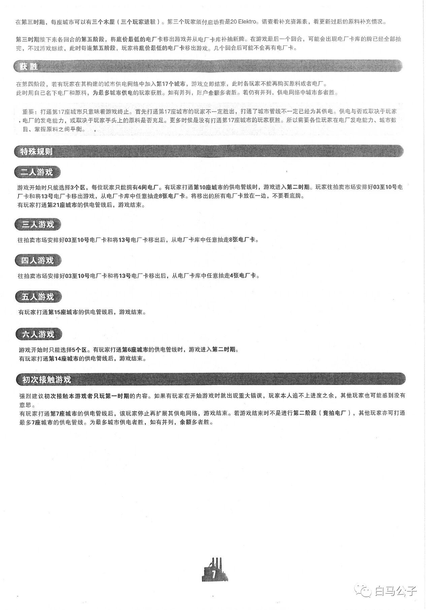
〔本页页首两段接续上页正文，页面上无对应小节标题〕
在第三时期，每座城市可以有三个木屋（三个玩家进驻）。第三个玩家须付启动费是20 Elektro。请查看补充资源表，看更新过后的原料补充情况。
第三时期接下来各回合的第五阶段，将底价最低的电厂卡移出游戏并从电厂卡库补抽新牌。在游戏最后一个回合，可能会出现电厂卡库的牌已经全部抽完，不过游戏继续，此时每逢第五阶段，玩家将底价最低的电厂卡移出游戏。几个回合后可能不会再有电厂卡。
获胜
在第四阶段，若有玩家在其构建的城市供电网络中加入第17个城市，游戏立即结束，此时各玩家不能再购买原料或者电厂。
此时用自己名下电厂和原料，为最多城市供电的玩家获胜。如有并列，账户余额多者胜。若仍有并列，供电网络中城市多者胜。
重要：打通第17座城市只意味着游戏终止。首先打通第17座城市的玩家不一定胜出，打通了城市管线不一定已经为其供电。供电与否或取决于玩家，电厂的发电能力，或取决于玩家手头上的原料是否充足。更多时候是没有打通第17座城市的玩家获胜。所以需要各位玩家在电厂发电能力、城市数目、掌握原料之间平衡。，〔原文如此：句号后另印有一个孤立的逗号〕
特殊规则
二人游戏
游戏开始时只能选择3个区，每位玩家只能拥有4间电厂。有玩家打通第10座城市的供电管线时，游戏进入第二时期。玩家往拍卖市场安排好03至10号电厂卡和将13号电厂卡移出游戏，从电厂卡库中任意抽走8张电厂卡。将移出的所有电厂卡放在一边，不要看底牌。
有玩家打通第21座城市的供电管线后，游戏结束。
三人游戏
往拍卖市场安排好03至10号电厂卡和将13号电厂卡移出后，从电厂卡库中任意抽走8张电厂卡。
四人游戏
往拍卖市场安排好03至10号电厂卡和将13号电厂卡移出后，从电厂卡库中任意抽走4张电厂卡。
五人游戏
有玩家打通第15座城市的供电管线后，游戏结束。
六人游戏
游戏开始时只能选择5个区。有玩家打通第6座城市的供电管线时，游戏进入第二时期。
有玩家打通第14座城市的供电管线后，游戏结束。
初次接触游戏
强烈建议初次接触本游戏者只玩第一时期的内容。如果有玩家在开始游戏时就出现重大错误，玩家本人追不上进度之余，其他玩家也可能感到没有意思。
有玩家打通第7座城市的供电管线后，该玩家停止再扩展其供电网络，游戏结束。若游戏结束时不是进行第二阶段（竟拍电厂）〔原文如此：括内首字印作"竟"〕，其他玩家亦可打通最多7座城市的供电管线。为最多城市供电者胜，如有并列，余额多者胜。
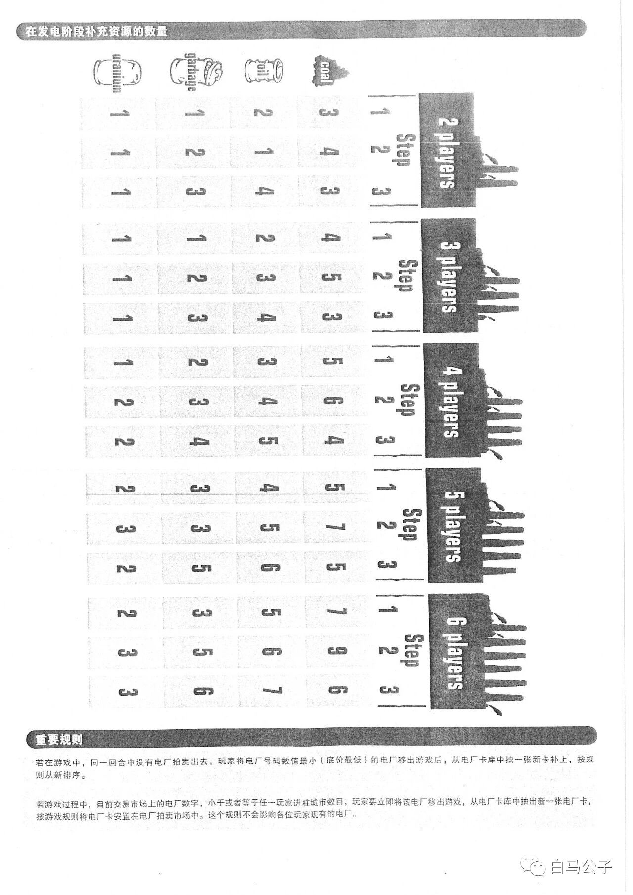
在发电阶段补充资源的数量
〔全页为一幅补充资源表，在页面上横向印刷（表格旋转90°）。表格按人数分为五组，组首印有英文"N players"（2 players、3 players、4 players、5 players、6 players）及"Step 1 2 3"栏标；行首为四种资源图案及英文小字，自上而下为 coal、oil、garbage、uranium。下表为转正后的逐格转录，每格三个数字依次为 Step 1、Step 2、Step 3 的补充数量：〕
| 资源（原表英文） | 2 players | 3 players | 4 players | 5 players | 6 players |
|---|---|---|---|---|---|
| coal | 3 / 4 / 3 | 4 / 5 / 3 | 5 / 6 / 4 | 5 / 7 / 5 | 7 / 9 / 6 |
| oil | 2 / 1 / 4 | 2 / 3 / 4 | 3 / 4 / 5 | 4 / 5 / 6 | 5 / 6 / 7 |
| garbage | 1 / 2 / 3 | 1 / 2 / 3 | 2 / 3 / 4 | 3 / 3 / 5 | 3 / 5 / 6 |
| uranium | 1 / 1 / 1 | 1 / 1 / 1 | 1 / 2 / 2 | 2 / 3 / 2 | 2 / 3 / 3 |
重要规则
若在游戏中，同一回合中没有电厂拍卖出去，玩家将电厂号码数值最小（底价最低）的电厂移出游戏后，从电厂卡库中抽一张新卡补上，按规则从新排序。
若游戏过程中，目前交易市场上的电厂数字，小于或者等于任一玩家进驻城市数目，玩家要立即将该电厂移出游戏，从电厂卡库中抽出新一张电厂卡，按游戏规则将电厂卡安置在电厂拍卖市场中。这个规则不会影响各位玩家现有的电厂。
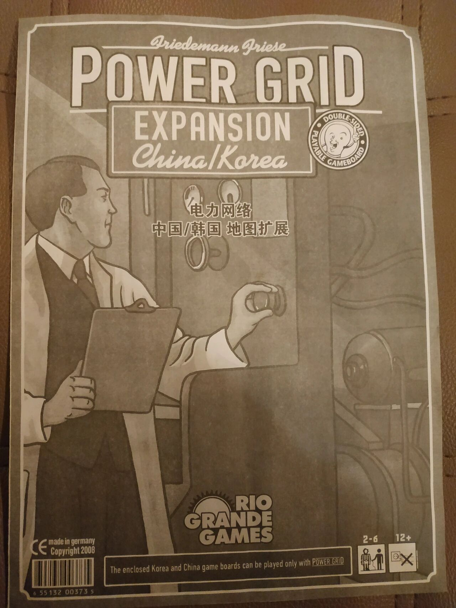
〔本页为《电力网络：中国/韩国 地图扩展》的封面页（扩展包装正面扫描）。整页为插图：一名穿白色工作服的男子侧身持写字板，另一手按在墙上带插孔/开关的配电板上。以下逐项照录封面印刷文字。〕
封面上部
Friedemann Friese〔手写花体签名式标志〕
POWER GRID
EXPANSION
China/Korea
〔右侧圆形徽章，环上文字：DOUBLE-SIDED PLAYABLE GAMEBOARD；徽章中心为一笑脸图形〕
封面中部
电力网络
中国/韩国 地图扩展
封面底部
〔RIO GRANDE GAMES 出版商标志（齿轮太阳图形）〕
CE made in germany
Copyright 2008
〔条形码，下印编号〕6 55132 00373 s〔首位数字印刷模糊，?〕
The enclosed Korea and China game boards can be played only with POWER GRID〔框内英文提示，印 POWER GRID 加下划线〕
〔右下角图标：〕2-6〔玩家人数图标〕 12+〔年龄图标，旁有叉形符号的插头小图标〕
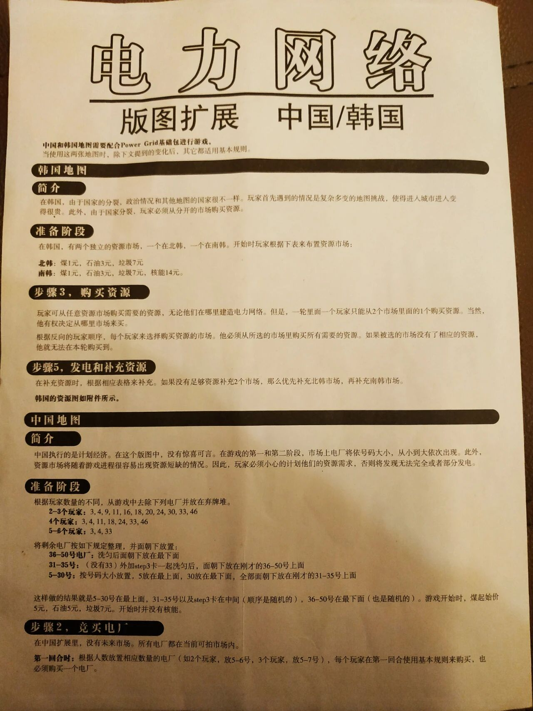
〔页首两行大号美术字标题〕
电力网络
版图扩展 中国/韩国
中国和韩国地图需要配合Power Grid基础包进行游戏。
当使用这两张地图时，除下文提到的变化后，其它都适用基本规则。〔原文如此〕
韩国地图
简介
在韩国，由于国家的分裂，政治情况和其他地图的国家很不一样。玩家首先遇到的情况是复杂多变的地图挑战，使得进入城市进入变得很贵。此外，由于国家分裂，玩家必须从分开的市场购买资源。〔"进入城市进入" 原文如此〕
准备阶段
在韩国，有两个独立的资源市场，一个在北韩，一个在南韩。开始时玩家根据下表来布置资源市场：
北韩：煤1元，石油3元，垃圾7元
南韩：煤1元，石油3元，垃圾7元，核能14元。
步骤3，购买资源
玩家可从任意资源市场购买需要的资源，无论他们在哪里建造电力网络。但是，一轮里面一个玩家只能从2个市场里面的1个购买资源。当然，他有权决定从哪里市场来买。〔原文如此〕
根据反向的玩家顺序，每个玩家来选择购买资源的市场。他必须从所选的市场里购买所有需要的资源。如果被选的市场没有了相应的资源，他就无法在本轮购买到。
步骤5，发电和补充资源
在补充资源时，根据相应表格来补充。如果没有足够资源补充2个市场，那么优先补充北韩市场，再补充南韩市场。
韩国的资源图如附件所示。
中国地图
简介
中国执行的是计划经济。在这个版图中，没有惊喜可言。在游戏的第一和第二阶段，市场上电厂将依号码大小，从小到大依次出现。此外，资源市场将随着游戏进程很容易出现资源短缺的情况。因此，玩家必须小心的计划他们的资源需求，否则将发现无法完全或者部分发电。
准备阶段
根据玩家数量的不同，从游戏中去除下列电厂并放在弃牌堆。
2–3个玩家：3, 4, 9, 11, 16, 18, 20, 24, 30, 33, 46
4个玩家：3, 4, 11, 18, 24, 33, 46
5–6个玩家：3, 4, 33
将剩余电厂按如下规定整理，并面朝下放置：
36–50号电厂：洗匀后面朝下放在最下面
31–35号：（没有33）外加step3卡一起洗匀后，面朝下放在刚才的36–50号上面
5–30号：按号码大小放置，5放在最上面，30放在最下面，全部面朝下放在刚才的31–35号上面
这样做的结果就是5–30号在最上面，31–35号以及step3卡在中间（顺序是随机的），36–50号在最下面（也是随机的）。游戏开始时，煤起始价5元，石油5元，垃圾7元。开始时并没有核能。
步骤2，竞买电厂
在中国扩展里，没有未来市场。所有电厂都在当前可拍市场内。
第一回合时：根据人数放置相应数量的电厂（如2个玩家，放5–6号，3个玩家，放5–7号），每个玩家在第一回合使用基本规则来购买，也必须购买一个电厂。
〔页面下部至此为空白余白〕
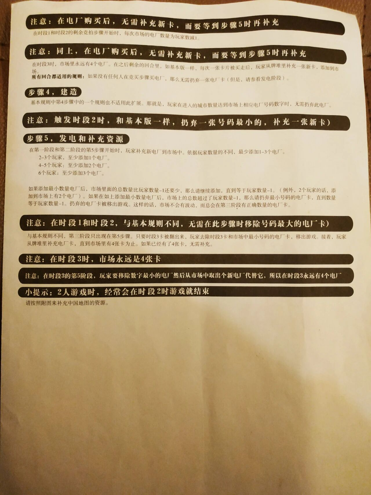
（本页无页标题，页首直接为条栏正文；页面下半部分为空白纸面，无页码）
注意：在电厂购买后，无需补充新卡，而要等到步骤5时再补充
在时段1和时段2的剩余竞拍步骤开始时，每次市场的电厂数量为玩家数减1。
注意：同上，在电厂购买后，无需补充新卡，而要等到步骤5时再补充
在时段3时，市场里永远有4个电厂。在之后剩余的回合里，如基本版一样，每次一张卡片被买走后，玩家从牌堆里补充一张新卡，添加到市场。
所有回合都适用的规则： 如果没有任何人在竞买步骤买电厂，那么无需扔弃一张电厂卡（但是，请参看发电阶段）。
步骤 4，建造
基本规则中第4步骤中的一个规则也不适用此扩展。那就是，玩家在进入的城市数量达到市场上相应电厂号码数字时，无需扔弃此电厂。
注意：触发时段2时，和基本版一样，扔弃一张号码最小的，补充一张新卡）〔原文如此：句首无开括号、句末只有闭括号〕
步骤5，发电和补充资源
在第一阶段和第二阶段的第5步骤开始时，玩家补充新电厂到市场中。依据玩家数量的不同，最少添加1-3个电厂。
- 2-3个玩家，至少添加1个电厂。〔原文如此：本行用逗号，下两行用冒号〕
- 4-5个玩家：至少添加2个电厂。
- 6个玩家：至少添加3个电厂。
如果添加最小数量电厂后，市场里面的总数量比玩家数量-1还要少，那么请继续添加，直到等于玩家数量-1。（例外，2个玩家的话，添加到市场上有2个电厂）。如果在如上添加最小数量电厂后，市场上的总数超过了玩家数量-1，那么请扔弃最小号码的电厂卡，直到数量等于玩家数量-1。扔弃的电厂卡被移出游戏。这样的话，市场不会有波动，而总会在第三阶段有正确数量的电厂卡。
注意：在时段1和时段2，与基本规则不同，无需在此步骤时移除号码最大的电厂卡）〔原文如此：句末只有闭括号，无开括号〕
与基本规则不同，第三阶段只出现在第5步骤。只要时段3卡被翻出来，玩家去除时段3卡和市场中最小号码的电厂卡，移出游戏。接着，玩家从牌堆里补充电厂卡，直到市场里有4张卡为止。如果已经有了4张卡，无需补充。
注意：在时段3时，市场永远是4张卡
注意：在时段3的第5阶段，玩家要移除数字最小的电厂然后从市场中取出个新电厂代替它，所以在时段3永远有4个电厂〔原文如此：句末无标点〕
小提示：2人游戏时，经常会在时段2时游戏就结束
请按照附图来补充中国地图的资源。
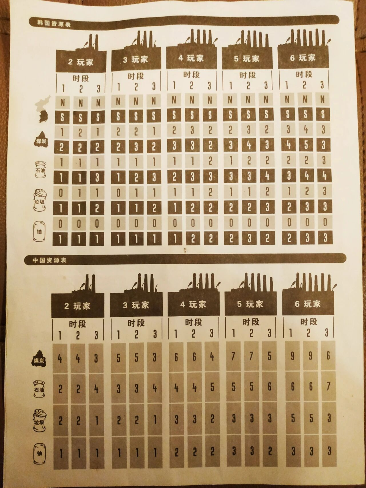
（本页整页为两张资源表，深棕色印刷，无其他正文，无页码）
〔图 每组玩家人数栏顶部均印有电厂厂房剪影图案，烟囱数量与玩家人数对应（2玩家2根烟囱，3玩家3根，依此类推至6玩家6根）；每组下方标"时段"及 1、2、3 三列。〕
韩国资源表
原表无行文字标签。左侧第一个图标为朝鲜半岛轮廓剪影（北部浅色、南部深色），其右侧两行单元格内印字母"N"（浅色行）与"S"（深色行）；其后每种资源图标（煤炭、石油、垃圾、铀）各位于一组两行数字之间（上行浅色、下行深色）。下表"浅色行／深色行"为转录者对底色的客观描述。
| 行 | 2玩家·时段1 | 2玩家·时段2 | 2玩家·时段3 | 3玩家·时段1 | 3玩家·时段2 | 3玩家·时段3 | 4玩家·时段1 | 4玩家·时段2 | 4玩家·时段3 | 5玩家·时段1 | 5玩家·时段2 | 5玩家·时段3 | 6玩家·时段1 | 6玩家·时段2 | 6玩家·时段3 |
|---|---|---|---|---|---|---|---|---|---|---|---|---|---|---|---|
| N（浅色行） | N | N | N | N | N | N | N | N | N | N | N | N | N | N | N |
| S（深色行） | S | S | S | S | S | S | S | S | S | S | S | S | S | S | S |
| 煤炭·浅色行 | 1 | 2 | 1 | 2 | 2 | 1 | 2 | 3 | 2 | 2 | 3 | 2 | 3 | 4 | 3 |
| 煤炭·深色行 | 2 | 2 | 2 | 2 | 3 | 2 | 3 | 3 | 2 | 3 | 4 | 3 | 4 | 5 | 3 |
| 石油·浅色行 | 1 | 1 | 1 | 1 | 1 | 1 | 1 | 1 | 2 | 1 | 2 | 2 | 2 | 2 | 3 |
| 石油·深色行 | 1 | 1 | 3 | 1 | 2 | 3 | 2 | 3 | 3 | 3 | 3 | 4 | 3 | 4 | 4 |
| 垃圾·浅色行 | 0 | 1 | 1 | 0 | 1 | 1 | 1 | 1 | 2 | 1 | 1 | 2 | 1 | 2 | 3 |
| 垃圾·深色行 | 1 | 1 | 2 | 1 | 1 | 2 | 1 | 2 | 2 | 2 | 2 | 3 | 2 | 3 | 3 |
| 铀·浅色行 | 0 | 0 | 0 | 0 | 0 | 0 | 0 | 0 | 0 | 0 | 0 | 0 | 0 | 0 | 0 |
| 铀·深色行 | 1 | 1 | 1 | 1 | 1 | 1 | 1 | 2 | 2 | 2 | 3 | 2 | 2 | 3 | 3 |
中国资源表
左侧为资源图标（煤炭、石油、垃圾、铀），每种资源一行数字。
| 行 | 2玩家·时段1 | 2玩家·时段2 | 2玩家·时段3 | 3玩家·时段1 | 3玩家·时段2 | 3玩家·时段3 | 4玩家·时段1 | 4玩家·时段2 | 4玩家·时段3 | 5玩家·时段1 | 5玩家·时段2 | 5玩家·时段3 | 6玩家·时段1 | 6玩家·时段2 | 6玩家·时段3 |
|---|---|---|---|---|---|---|---|---|---|---|---|---|---|---|---|
| 煤炭 | 4 | 4 | 3 | 5 | 5 | 3 | 6 | 6 | 4 | 7 | 7 | 5 | 9 | 9 | 6 |
| 石油 | 2 | 2 | 4 | 3 | 3 | 4 | 4 | 4 | 5 | 5 | 5 | 6 | 6 | 6 | 7 |
| 垃圾 | 2 | 2 | 1 | 2 | 2 | 1 | 3 | 3 | 2 | 3 | 3 | 3 | 5 | 5 | 3 |
| 铀 | 1 | 1 | 1 | 1 | 1 | 1 | 2 | 2 | 2 | 3 | 3 | 2 | 3 | 3 | 3 |